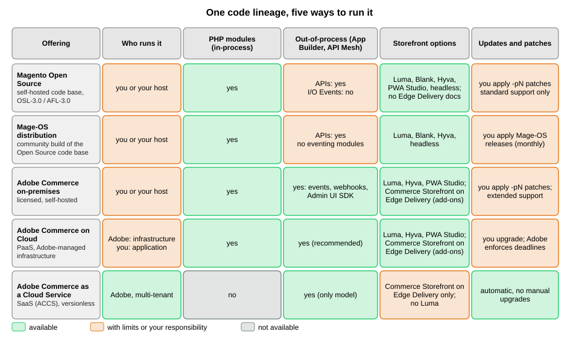

Editions and Ecosystem
|
This content was generated with the assistance of AI and should be verified against the official documentation before being relied on in production. |
"Magento" is a code base, several products and a community, and the documentation, the tooling and even the features you can use change with the one you pick. This page maps them: the open source code base, the licensed Adobe Commerce editions that add features and hosting, the software-as-a-service edition that removes PHP extensions altogether, the community distribution Mage-OS, and the storefront options Hyvä and PWA Studio. It was written against Magento 2.4.9 (generally available 2026-05-12) and Mage-OS 3.6.0 (2026-10-14), and every fact was checked on 2026-10-27 against the Adobe documentation, the repositories and the vendors' own sites.
The decision that matters most for a developer is not the price of a license but the extensibility model an edition allows. Classic Magento extensions are PHP modules that run inside the Commerce process (in-process). Adobe’s direction is applications that run outside it and talk to Commerce through APIs, events and webhooks (out-of-process). Some editions allow only one of the two. The rest of the Magento subsection teaches both, and this page tells you which parts of it apply to the edition you will run. The running example, Pocket Coffee, picks its edition in the last section.
One code lineage, five ways to run it
The figure and the table below summarise the five offerings. They share a lineage: Mage-OS is built from the Open Source code base, and Adobe Commerce is built from it as well and adds licensed features and Adobe services.

| Offering | What it is | Who operates it | Extensibility |
|---|---|---|---|
Magento Open Source |
The free, self-hosted code base in the |
You or your host: PHP, database, search, cache, patches. |
In-process PHP modules; APIs. Adobe I/O Events is not supported. |
Mage-OS |
A community-owned distribution of the Open Source code base with its own releases and Composer repository. |
You or your host. |
Same as Open Source; the eventing modules are not part of the distribution. |
Adobe Commerce (on-premises) |
The licensed edition, installed on your own infrastructure. |
You. |
In-process and out-of-process (events, webhooks, App Builder). |
Adobe Commerce on Cloud |
The same software on Adobe-managed single-tenant cloud infrastructure (PaaS). |
Adobe operates the infrastructure; you deploy and patch the application. |
In-process and out-of-process; Adobe recommends APIs, events and App Builder. |
Adobe Commerce as a Cloud Service (ACCS) |
The multi-tenant, versionless SaaS edition, with a headless storefront on Edge Delivery Services. |
Adobe. |
Out-of-process only. |
Adobe’s documentation marks which product a page is about with badges. A page with the PaaS only badge covers Adobe Commerce on Cloud and on-premises projects and, unless the page says otherwise, self-hosted projects built on the Magento Open Source code base; a page with the SaaS only badge covers Adobe Commerce as a Cloud Service and Adobe Commerce Optimizer projects only. A page without a badge applies to all solutions. Keep this rule in mind when you follow an official link from this subsection, because a feature can be absent from an edition even when its page looks general.
Magento Open Source
Magento Open Source is the code base. It lives in github.com/magento/magento2, its
default branch is 2.4-develop, and the project licence is the Open Software License 3.0 (the repository metadata shows
OSL-3.0, and the composer.json of tag 2.4.9 declares OSL-3.0 and AFL-3.0). Every -pN release is tagged there, which
is how Open Source users get the security patches; see
Versions, Lifecycle and Requirements.
What Open Source gives you is the whole commerce engine: catalog, cart, checkout, orders, customers, promotions, the Admin, the frontend themes Blank and Luma, the REST and GraphQL APIs and the module system that the rest of this subsection teaches. What it does not give you, according to Adobe’s documentation, is the following.
-
Extended-support security patches. They are for Adobe Commerce customers only, not for the Open Source code base.
-
Adobe I/O Events. The Adobe documentation requires Adobe Commerce 2.4.4 or later and states that Magento Open Source is not supported. The webhooks documentation lists its scope as Adobe Commerce and never mentions Open Source, so treat webhooks as Adobe Commerce only until the documentation says otherwise.
-
The Upgrade Compatibility Tool. The documentation says it is available for Adobe Commerce instances only.
-
B2B and other Adobe Commerce features. Adobe’s feature comparison lists B2B, content staging and Visual Merchandiser as Adobe Commerce features, and none of them is documented for Open Source; check each feature page for its badge before relying on it.
The Marketplace keys problem deserves a warning, because it surprises newcomers. The official way to install Open Source
is composer create-project --repository-url=https://repo.magento.com/ magento/project-community-edition, and
that repository asks for Marketplace access keys even though the software is free (the public key is the user name and
the private key is the password). This subsection never creates such an account, so it installs through Mage-OS. The Installation page walks through it, and Mage-OS
(next section) avoids it.
Adobe Commerce on-premises and on Cloud
Adobe Commerce adds licensed features and Adobe’s support on top of the Open Source code base. It comes in two self-managed shapes, which Adobe’s documentation groups together as the PaaS model.
Adobe Commerce on-premises is installed on your own servers or a host you pick, exactly like Open Source, with the
magento/project-enterprise-edition Composer project and the same Marketplace access keys. You operate everything and
you own the patching. In return you get the extended support tiers, the Upgrade Compatibility Tool, B2B and the out-of-process extension points (events
and webhooks).
Adobe Commerce on Cloud is the same software on Adobe-managed, single-tenant cloud infrastructure with a preprovisioned environment. Adobe’s feature comparison page lists, for this model, the following properties:
-
Updates are manual: you upgrade and patch yourself, with about six patch releases and one minor release per year.
-
Hosting is single-tenant, on Azure (24 locations), AWS (22 locations) or Google Cloud (8 locations, not standard).
-
The Fastly CDN is included, and New Relic access lets you monitor the environment.
-
Service levels are 99.99% for the infrastructure and 99.9% for the application (Managed Services).
-
The extensibility model is in-process (PHP customisation) and out-of-process; the recommended path is APIs, events and App Builder.
-
Search can be customised natively, emails fully customised, and the data model completely changed.
Cloud has one more property that a self-hosted shop does not: Adobe enforces version and dependency deadlines, with
suspension of the Admin or the whole storefront as the consequence. The dates are in the
Cloud enforcement section. The
only official Docker tooling, magento-cloud-docker, is for Cloud projects too; see
Local Development Environments.
Adobe Commerce as a Cloud Service (ACCS)
Adobe Commerce as a Cloud Service is a different architecture, not a hosting plan. It is multi-tenant, Adobe upgrades it continuously ("versionless"), and Adobe manages the infrastructure. It has four building blocks: the Commerce Storefront (the customer-facing interface), the Merchandising Services (catalog, pricing and inventory services), Product Visuals (digital asset management) and the Developer Platform (core development tools and APIs). Adobe Commerce Optimizer, a separate SaaS project type, is documented next to it and shares the SaaS badge.
The extensibility consequences are large, and they are the reason this page exists. Adobe states that Adobe Commerce as a Cloud Service does not support Luma storefronts, and its feature comparison lists these differences from the PaaS model.
| Area | PaaS (on Cloud and on-premises) | SaaS (ACCS) |
|---|---|---|
Extensibility model |
In-process (PHP customisation) and out-of-process |
Out-of-process only: APIs, events, App Builder |
Technologies |
CSS, CLI, HTML, JS, PHP, XML |
CSS, CLI, HTML, JS, Node |
Extensible web APIs |
Native REST and GraphQL extensibility and API Mesh with custom resolvers |
API Mesh with custom resolvers |
Data model |
Complete data model customisation |
Custom attributes for core and B2B entities |
Admin extensibility |
PHP customisation and theming; App Builder (recommended) |
App Builder |
Marketplace |
Magento Marketplace for PHP extensions, and Exchange Marketplace for App Builder apps (recommended) |
App Builder apps from the Exchange Marketplace only |
Custom storage |
Database, files, cache, queues |
App Builder state library (file only); database storage for App Builder is in early access |
Search customisation |
Native |
Needs third-party solutions |
Full customisation |
Standard email templates only |
|
Updates |
Manual upgrades and patches |
Automatic |
Hosting |
Single-tenant |
Multi-tenant, Adobe-managed |
Storefront |
Luma, Hyvä, PWA Studio or others |
Commerce Storefront on Edge Delivery Services (headless) |
Store features that differ |
Media Gallery, CMS and Page Builder, content staging and Visual Merchandiser, payment solutions |
Product Visuals, Storefront Builder, Catalog Service, Payment Services |
Source: Adobe Commerce docs: SaaS and PaaS comparison and Adobe Commerce docs: Cloud Service overview
The practical rule: almost everything the later pages teach about PHP modules, di.xml, plugins, observers, declarative
schema, layouts and phtml templates does not apply to ACCS. What applies to it is the
REST and GraphQL APIs page (the APIs themselves), the
API Authentication page (Adobe IMS replaces the native tokens on SaaS)
and the Out-of-Process Extensibility page. Adobe’s own migration
advice for teams moving to SaaS is to move suitable functionality to out-of-process extensibility where possible, reduce the
scope that requires a transition, consider API Mesh for extending API functionality, and evaluate industry-specific data
model needs against the available extension options.
The Commerce Storefront is documented in the Adobe tools site as built on Edge Delivery Services with Commerce blocks and drop-in components. Its backend options are Adobe Commerce on Cloud or on-premises (through a Storefront Compatibility package), Adobe Commerce as a Cloud Service, and Adobe Commerce Optimizer. All drop-in components require an ACCS or Adobe Commerce Optimizer license; PaaS customers get drop-ins by adding an Adobe Commerce Optimizer license. Open Source is not among the listed backends. The Frontend: Hyvä, PWA Studio and Edge Delivery page covers this storefront in detail.
In-process and out-of-process extensibility
Adobe’s extensibility page defines the two models and says which one new work should use. In the in-process model, "PHP modules, plugins, observers, and other customizations" run inside the Commerce application process and interact directly with its runtime, services and database. That gives deep control but couples the custom code to the Commerce version, the PHP runtime, internal APIs, the deployment process and the resources of the application. In the out-of-process model the custom logic runs outside Commerce, on Adobe Developer App Builder and its supporting services, and connects through APIs, events, webhooks, SDKs and supported extension points.
| Characteristic | Out-of-process | In-process |
|---|---|---|
Where the code runs |
Outside Commerce, on App Builder and its services |
Inside the Commerce application process |
How it connects |
APIs, events, webhooks, SDKs, supported extension points |
PHP extension points and runtime services |
Release lifecycle |
Developed, tested, deployed and operated independently |
Coupled to Commerce deployment and upgrades |
Upgrade considerations |
Custom logic is decoupled from the Commerce code base |
Custom code must stay compatible with Commerce and its runtime |
Scaling and resources |
Scales independently of the Commerce application |
Shares the application’s resources |
Typical strengths |
Upgrade safety, integration flexibility, isolation, independent delivery |
Deep, synchronous control of the Commerce runtime |
The page adds that the two are not interchangeable implementation details: for new Commerce apps and for modernising existing customisations you should start with App Management and build using the out-of-process model. That is a recommendation, not a prohibition: the words "whenever possible", which you may see quoted, are not on the current page.
Which models an edition allows, and with which tools, is the table that decides what you can build.
| Capability | Open Source and Mage-OS | Adobe Commerce on-premises | Adobe Commerce on Cloud | ACCS |
|---|---|---|---|---|
PHP modules, plugins, observers, preferences |
yes |
yes |
yes |
no |
REST and GraphQL APIs |
yes |
yes |
yes |
yes, extended through API Mesh |
Adobe I/O Events (asynchronous events) |
no |
yes (2.4.4 or later) |
yes (2.4.4 or later) |
yes |
Webhooks (synchronous, can block or modify) |
not documented |
yes |
yes |
yes |
App Builder apps |
through APIs only |
yes |
yes |
yes |
Admin UI SDK |
not stated for Open Source |
listed among the Adobe Commerce tools |
listed among the Adobe Commerce tools |
yes |
Luma or Hyvä storefront |
yes |
yes |
yes |
no (Luma is not supported) |
Extended-support security patches |
no |
yes |
yes |
not applicable (versionless) |
Upgrade Compatibility Tool |
no |
yes |
yes |
not applicable |
Source: Adobe Commerce developer docs: Install Adobe I/O Events and Adobe Commerce developer docs: Webhooks
The two kinds of out-of-process connection differ in how they react to Commerce. Events are asynchronous: Commerce
sends a message after something happened (an order was placed) and the app handles it later, so it can never block the
shopper. Webhooks are synchronous: Commerce calls the app before it finishes an operation and waits for the answer,
which lets the app validate, block or modify the data. On-premises installations generate the webhook plugin module with
bin/magento webhooks:generate:module and define webhooks in a module’s etc/webhooks.xml or in app/etc/webhooks.xml,
while SaaS has a predefined list of webhooks configured in the Admin or through REST. The
Out-of-Process Extensibility page has the full detail.
Adobe’s documentation does not name an edition for the Admin UI SDK or API Mesh beyond listing them as ACCS tools, so this subsection says "documented for Adobe Commerce" rather than inventing support for Open Source.
The decision follows from three questions, which the diagram turns into a path.
Mage-OS
Mage-OS is a community-owned distribution of the Magento Open Source code base. It was founded to give the community a way to improve the platform and to keep businesses built around Open Source healthy; its association is member-owned, without shareholders or investors, according to its website. Its stated focus is performance and usability improvements and the integration of community pull requests that Adobe has not merged for lack of resources, while remaining compatible with Magento solutions and integrations. It publishes its own Composer repository, its own releases and a catalogue of community modules called Mage-OS Lab. This page and its siblings use Mage-OS 3.6.0 as the verification environment because it installs without Adobe Marketplace keys.
The facts below were observed on a local Mage-OS 3.6.0 shop (PHP 8.5.12, MariaDB 11.8.9, OpenSearch 3.9.0, Valkey 9.1.3) and on the project’s website.
-
Same code, other names. The distribution publishes
mage-os/*packages and uses the Composerreplacefield to stand in for themagento/*packages, as inmage-os/framework 3.6.0replacingmagento/framework (103.0.9). Extensions that depend on Magento packages therefore resolve against Mage-OS. The installed code lives invendor/mage-os(360 packages in the test shop) and there is novendor/magento. -
Install without keys. The project is created with
composer create-project --repository-url=https://repo.mage-os.org/ mage-os/project-community-edition. -
Based on 2.4.9.
bin/magento --versionprintsMage-OS CLI 3.6.0 (based on Magento 2.4.9). The release page says 3.6.0 is built on the same Magento Open Source 2.4.9 base as 3.5.0. -
Extras in the metapackage. The
mage-os/product-community-editionmetapackage requires community packages beyond Adobe’s set, for examplealigent/magento2-pci-4-compatibility,elgentos/magento2-varnish-extendedandcreatuity/magento2-interceptors, and it ships Blank and Luma plus an alternative Admin theme. -
Not byte-identical to Adobe. Mage-OS 3.6.0 still includes
webapi.xsdandcsp_whitelist.xsd, which Adobe’s 2.4.9 removes, and it contains none of the Adobe I/O Events modules. -
Own cadence. The 2026 releases were 3.1.0 (2026-06-18), 3.2.0 (2026-07-14), 3.3.0 (2026-08-05), 3.4.0 (2026-08-11), 3.5.0 (2026-09-08, an emergency security release) and 3.6.0 (2026-10-14, a security release that ports Adobe’s October isolated patch for APSB26-153).
Mage-OS describes 3.5.0 as porting Adobe’s hotfix for CVE-2026-75650, which it calls StyleSmuggler, an unauthenticated remote code execution that Adobe reports as exploited in the wild, and it warns that patching alone is not enough: the remediation steps (key rotation) apply as well. That makes the distribution a practical way to get fast fixes without an Adobe license, but it also means you depend on the Mage-OS team for patch timing, not on Adobe.
These commands were run on the local Mage-OS 3.6.0 shop to check the claims above; they only read data.
bin/magento --version
composer show mage-os/product-community-edition | grep -E "^(versions|license|type)"
composer show mage-os/product-community-edition | grep -c "^mage-os/"
composer why magento/framework | head -n 3
ls vendor/mage-os | wc -l
bin/magento module:status | grep -c "^Magento_"Source: Mage-OS and Mage-OS Composer repository
The outputs were the CLI banner above, versions : * 3.6.0, two licence lines (OSL-3.0 and AFL-3.0) and a metapackage
type, a count of 248 mage-os/* requirements, the replace relationship for magento/framework, 360 packages in
vendor/mage-os, and 319 enabled Magento_* modules. The module count is a useful sanity number: the core is a large,
modular code base, about 320 modules, which is why the Architecture
Overview spends time on modules and areas.
Hyvä
Hyvä Theme is a third-party storefront theme that replaces Luma’s RequireJS, Knockout and LESS stack with Tailwind CSS and Alpine.js. It is the best-known Luma alternative for self-hosted Magento (its vendor reports more than 7,000 stores, a vendor figure). Its licensing changed in November 2025, which affects every older article you will find.
-
On 2025-11-06 Hyvä announced that the Hyvä Theme would be relicensed under OSL-3.0 and AFL-3.0, the licences of Magento Open Source itself, so it can be used free of charge and redistributed under commercial licences. Since 2025-11-10 it is available on GitHub and through free Packagist Composer keys issued from the Hyvä Portal. The modules that support the theme are relicensed under OSL-3.0 alongside it.
-
Hyvä Checkout, Hyvä Enterprise (the all-in-one for Adobe Commerce) and Hyvä Commerce (the all-in-one for Magento Open Source) remain proprietary under Hyvä’s commercial licence. Hyvä Checkout and Hyvä Enterprise no longer require a paid Hyvä Theme licence. Hyvä UI became a separate product, announced at EUR 250 per Magento store, with existing Hyvä Theme licensees keeping their support and Hyvä UI access; check the current price before budgeting.
-
The repository
hyva-themes/magento2-default-themecarries the OSL-3.0 and AFL-3.0 licence and says it is compatible with Magento 2.4.0 and higher. It has no GitHub releases, so you install it through Composer. -
The installation documentation requires Magento 2.4.4-p9, 2.4.5-p8, 2.4.6-p7 or 2.4.7-p1 or higher, and Node 20 or later for the Tailwind build. It installs with
composer config --auth http-basic.hyva-themes.repo.packagist.com token <your key>andcomposer require hyva-themes/magento2-default-theme, followed bybin/magento setup:upgrade. -
Magento’s own minification and bundling of HTML, CSS and JavaScript do not benefit Hyvä sites, so disable them for Hyvä store views.
-
At the time of checking, the Hyvä compatibility documentation lists PHP 8.1 to 8.4 while Magento 2.4.9 requires PHP 8.5. That is a documented tension to resolve before an upgrade.
-
Extensions written for Luma (RequireJS, Knockout, LESS) do not render on Hyvä without a compatibility module, which is why a Hyvä migration has a cost proportional to the number of frontend extensions.
Hyvä was not installed in the verification environment, so none of the commands above were run; the Frontend: Hyvä, PWA Studio and Edge Delivery page covers the theme in more depth.
PWA Studio and headless storefronts
PWA Studio is Adobe’s React-based toolset for building a progressive web app storefront on top of the GraphQL API; its
reference storefront is called Venia. The repository’s latest GitHub release at the time of checking is 14.5.1, and neither
the repository page nor the developer documentation carries a deprecation or archive notice. The documentation states no
support status and no compatibility table either, so "maintained, not deprecated" means only that no notice was found.
The npm packages are versioned independently of the GitHub release tag (for example @magento/venia-ui is at 11.7.4 while
the release tag is 14.5.1), so do not compare the two numbers.
Any headless storefront, whether PWA Studio, a Next.js shop or Adobe’s Commerce Storefront, talks to Magento through the GraphQL API and the REST API. They remove the Luma theme from the request path and move rendering to a separate application, at the cost of re-implementing features the theme gave you for free. For a first project, Luma or Hyvä on the server-rendered stack is the lower-risk choice.
The marketplaces and the rest of the ecosystem
Where extensions come from depends on the edition and on the model.
-
The Magento Marketplace (marketplace.magento.com) lists PHP extensions for the in-process model. Installing from it needs Marketplace access keys, and the extension quality programme described in Testing, Coding Standards and Marketplace governs what is listed.
-
The Exchange Marketplace (commercemarketplace.adobe.com) lists App Builder apps for the out-of-process model; Adobe recommends it for PaaS and it is the only extension channel on ACCS.
-
Mage-OS Lab is a catalogue of community modules, organised into categories such as developer tools, performance, SEO and security.
-
Packagist and private Composer repositories are how most agency and vendor modules are delivered, including Hyvä’s free key mechanism.
Because any PHP extension can change checkout or the Admin, treat third-party code as part of your attack surface, which the Security page quantifies.
Choosing an edition for Pocket Coffee
Pocket Coffee is a small specialty-coffee shop with 18 bean variants, a Coffee Club customer group, two shipping zones and Spanish and English storefronts. It needs custom PHP behaviour (a roast date badge on the product page and an "order placed" log line), which rules out ACCS, and its budget does not include an Adobe Commerce license.
| Question | Answer for Pocket Coffee | Consequence |
|---|---|---|
Does it need in-process PHP modules? |
Yes: the roast date badge and the order observer |
Not ACCS. |
Does it need Adobe-only features? |
No: no B2B, no content staging, no Adobe I/O Events |
Open Source or Mage-OS is enough. |
Who patches it? |
The owner or an agency, monthly |
No extended support: stay on the newest line, 2.4.9. |
Does it want Adobe keys? |
No |
Mage-OS 3.6.0 installs without Marketplace keys. |
Which frontend? |
Luma first, Hyvä later |
Luma ships with the platform; Hyvä is now free but needs a compatibility check. |
So the subsection builds Pocket Coffee on Mage-OS 3.6.0 (Magento 2.4.9) with PHP 8.5, OpenSearch 3 and Valkey 9, with plugins, observers, declarative schema and REST and GraphQL endpoints. Wherever a feature changes on Adobe Commerce, the page says so. A team on Adobe Commerce on Cloud would follow the same pages and add the out-of-process material; a team on ACCS would skip most of the PHP pages and use the API, authentication and out-of-process pages.
Things this page could not run: the Adobe Marketplace and repo.magento.com installs, Adobe Commerce-only features,
Adobe I/O Events, webhooks, App Builder, ACCS and Cloud environments (all need Adobe accounts or licences), and Hyvä and PWA
Studio installs. Their statements come from the cited Adobe, Hyvä and GitHub pages.